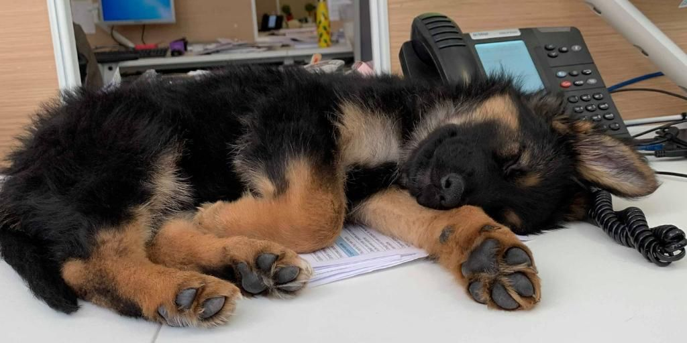
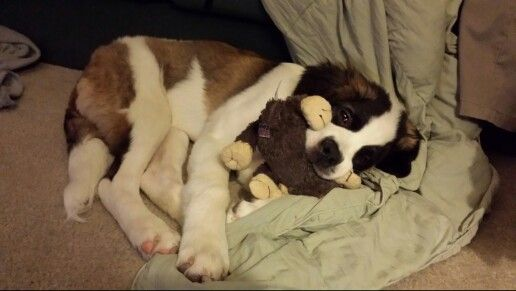
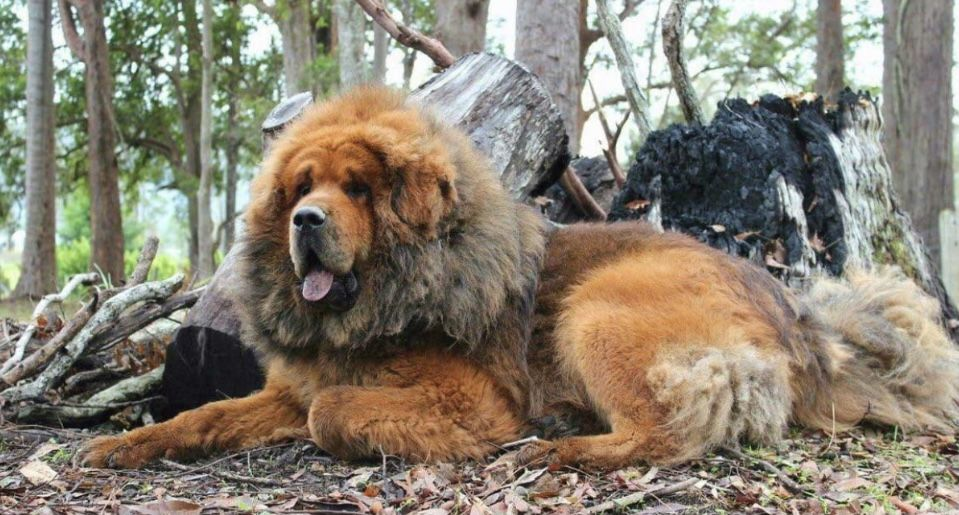
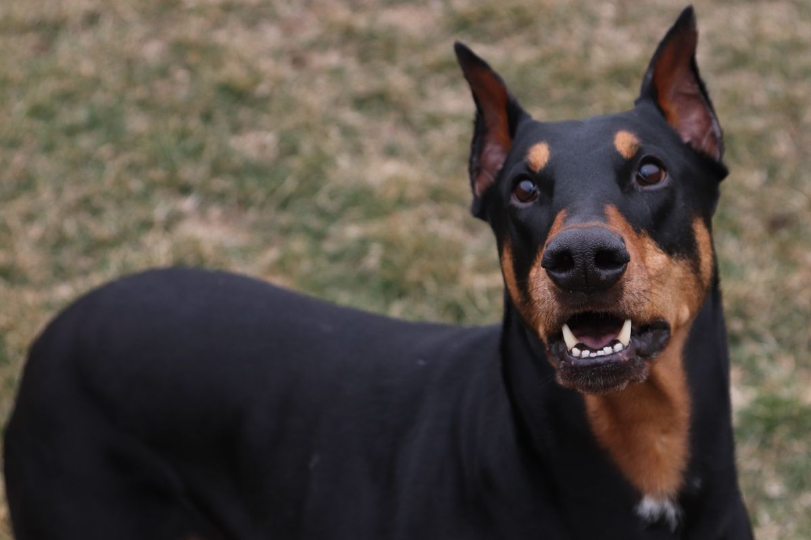

Golden retriever
La raza de perro golden retriever se trata probablemente de uno de los perros más reconocibles y queridos. Es un perro extrovertido, juguetón y, probablemente, sea la mejor mascota para literalmente todo el mundo. Su actitud tolerante, su inteligencia y la facilidad con la que se le adiestra lo convierte en un excelente perro de compañía para propietarios con o sin experiencia.
Aun así, no deberás esperar que un golden retriever sea un buen perro guardián, ya que intentará hacerse amigo de cualquier persona que se le acerque. Además, es un perro al que le encanta ser el centro de atención, así que se desvivirá por un propietario cariñoso que pueda ofrecerle toda la atención y el afecto que necesita.
¿Quieres saber más sobre el golden retriever como su comportamiento, los cuidados o el tamaño? Sigue leyendo y descúbrelo en los siguientes apartados.
Puntuación Veterinaria
Perro familiar
5/5 — Amable, paciente y excelente con niños.
Fácil de adiestrar
5/5 — Muy inteligente y ansioso por complacer.
Nivel de energía
5/5 — Necesita paseos activos y juegos diarios.
Le gustan otras mascotas
5/5 — Convive sin problemas con perros y gatos.
Necesidades de aseo
4/5 — Requiere cepillado cada dos días.
Tolera quedarse solo
1/5 — Prefiere estar siempre acompañado.

Pastor alemán
El pastor alemán es una de las razas más inteligentes, leales y versátiles del mundo. Conocido originalmente por su labor en el pastoreo, hoy destaca como perro policía, de rescate, guía y compañero familiar. Tiene una apariencia noble, fuerte y ágil, con una expresión siempre atenta y segura de sí misma.
A diferencia de otras razas más confiadas, el pastor alemán es un excelente perro guardián. Puede mostrarse reservado con los desconocidos al principio, pero una vez que forma un vínculo con su familia, es profundamente protector, cariñoso y devoto con los suyos.
Debido a su alta inteligencia y energía, necesita tanto ejercicio físico diario como estimulación mental para mantenerse equilibrado y feliz. A continuación, descubre sus datos clave y puntuaciones.
Puntuación Veterinaria
Fácil de adiestrar
5/5 — Aprende órdenes con enorme rapidez.
Perro guardián
5/5 — Muy protector y alerta ante extraños.
Nivel de energía
5/5 — Requiere actividad física e intelectual diaria.
Perro familiar
4/5 — Muy leal y cariñoso con su familia.
Muda de pelo
5/5 — Suelta bastante pelo todo el año; requiere cepillado.
Apto para principiantes
3/5 — Necesita socialización y educación firme desde cachorro.

San bernardo
El san bernardo es un perro gigante originario de los Alpes suizos e italianos, famoso mundialmente por su historia como perro de rescate en la nieve y por su carácter dulce y paciente. A pesar de su imponente tamaño y peso, suele ser calmado, afectuoso y muy cercano a su familia.
Es conocido como un "gigante amable": suele llevarse muy bien con los niños y muestra una actitud tranquila en casa, aunque su gran envergadura implica que necesita espacio suficiente y supervisión para no derribar a niños pequeños sin querer.
Su ejercicio diario debe ser moderado y controlado, evitando esfuerzos excesivos en etapas de crecimiento para cuidar sus articulaciones. A continuación, revisa sus datos principales y puntuación veterinaria.
Puntuación Veterinaria
Perro familiar
5/5 — Muy cariñoso, noble y paciente en el hogar.
Nivel de energía
3/5 — Paseos moderados y constantes sin excesos.
Fácil de adiestrar
4/5 — Responde bien a la constancia y refuerzo positivo.
Necesidades de aseo
4/5 — Cepillado regular y atención a babas o pliegues.
Tolerancia al calor
1/5 — Prefiere climas frescos; sufre con el calor intenso.
Tolera quedarse solo
2/5 — Disfruta mucho de la compañía de su familia.

Mastín tibetano
El mastín tibetano es una raza antigua, imponente y de gran porte, originaria de las regiones frías del Himalaya y el Tíbet, donde tradicionalmente custodiaba monasterios y rebaños. Destaca por su melena abundante alrededor del cuello, su aspecto majestuoso y su presencia firme.
Es un perro guardián instintivo, independiente y territorial. Con su familia suele ser leal y tranquilo dentro de casa, pero ante personas o animales extraños mantiene una actitud vigilante y desconfiada, por lo que requiere socialización temprana y un guía constante.
Está especialmente adaptado a climas fríos y posee un instinto nocturno marcado, por lo que es habitual que esté más atento al caer la tarde. A continuación, consulta sus datos clave y puntuación veterinaria.
Puntuación Veterinaria
Perro guardián
5/5 — Instinto protector muy marcado y territorial.
Tolerancia al frío
5/5 — Su doble capa densa resiste muy bien el frío.
Necesidades de aseo
4/5 — Cepillado regular; muda abundante por temporada.
Fácil de adiestrar
3/5 — Inteligente pero independiente; requiere paciencia.
Nivel de energía
3/5 — Tranquilo en casa, activo para vigilar y pasear.
Apto para principiantes
2/5 — Mejor con dueños firmes y con experiencia previa.

Dóberman
El dóberman es una raza elegante, atlética y muy inteligente, reconocida por su porte firme, su pelaje corto y brillante, y su gran capacidad de aprendizaje. Tradicionalmente asociado a labores de vigilancia y defensa, hoy también brilla como perro de trabajo, deporte y compañía familiar.
Con su familia suele mostrarse afectuoso, atento y muy apegado, buscando siempre estar cerca de las personas que considera su grupo. Ante extraños puede resultar cauteloso y alerta, por lo que una buena socialización desde cachorro es clave para su equilibrio.
Tiene un nivel de energía alto y disfruta mucho tanto de los paseos activos como de los retos mentales o juegos de obediencia. A continuación, mira sus datos principales y puntuación veterinaria.
Puntuación Veterinaria
Fácil de adiestrar
5/5 — Muy atento, rápido y receptivo al entrenamiento.
Nivel de energía
5/5 — Necesita ejercicio diario y estimulación mental.
Perro guardián
5/5 — Vigilante, ágil y protector con su entorno.
Perro familiar
4/5 — Cercano y leal con quienes conviven con él.
Necesidades de aseo
1/5 — Pelaje corto y liso de mantenimiento sencillo.
Tolerancia al frío
1/5 — Al tener pelo corto sin subpelo, siente más el frío.